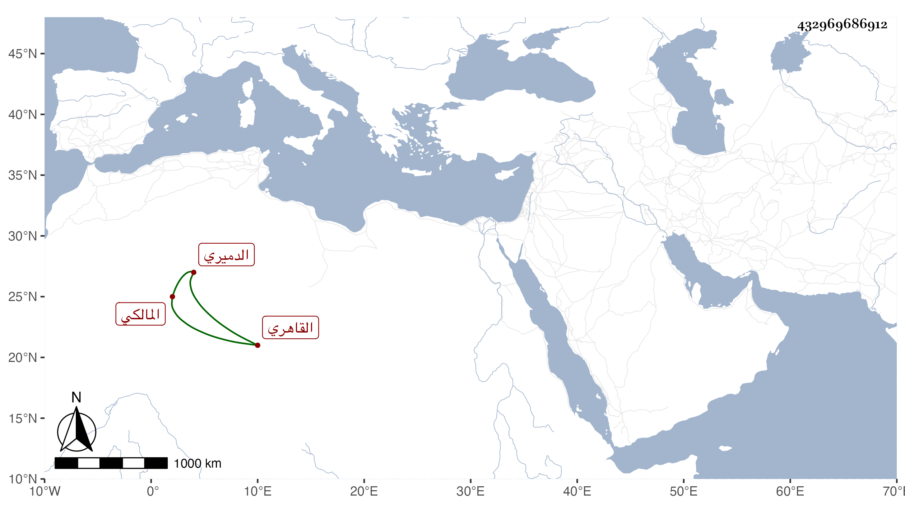

0902Sakhawi.DawLamic.ITO20230111-ara1.EIS1600.432969686912
Biography ID: 432969686912
701
محمد بن محمد بن محمد بن محمد بن أحمد بن عبد الملك الزين بن البدر بن الزين بن الشمس بن التاج الدميري الأصل القاهري المالكي سبط العلاء علي بن يحيى بن فضل الله العمري وقريب عبد القادر الماضي وأبو صاحب الترجمة . ولد سنة إحدى وثلاثين وثمانمائة تقريبا ونشأ في كنف أبيه فحفظ القرآن ومختصر الفروع وباشر بعد أبيه مشارفة البيمارستان ، وكان دربا في المباشرة متين العقل سمحا راغبا في الصرف للفقراء منجمعا عن الناس مع ثقل حركته وسمعه وحج . مات في ربيع الثاني سنة إحدى وتسعين ودفن بتربة جده لأمه بالقرب من تربة الدمارة خلف الصوفية الكبرى وبلغني أنه قبل موته بأيام رأى توجه أهل البيمارستان لقطع الطوارئ فقال ما بقي في الحضور فائدة ثم انقطع فلم يلبث أن مات رحمه الله وإيانا .
